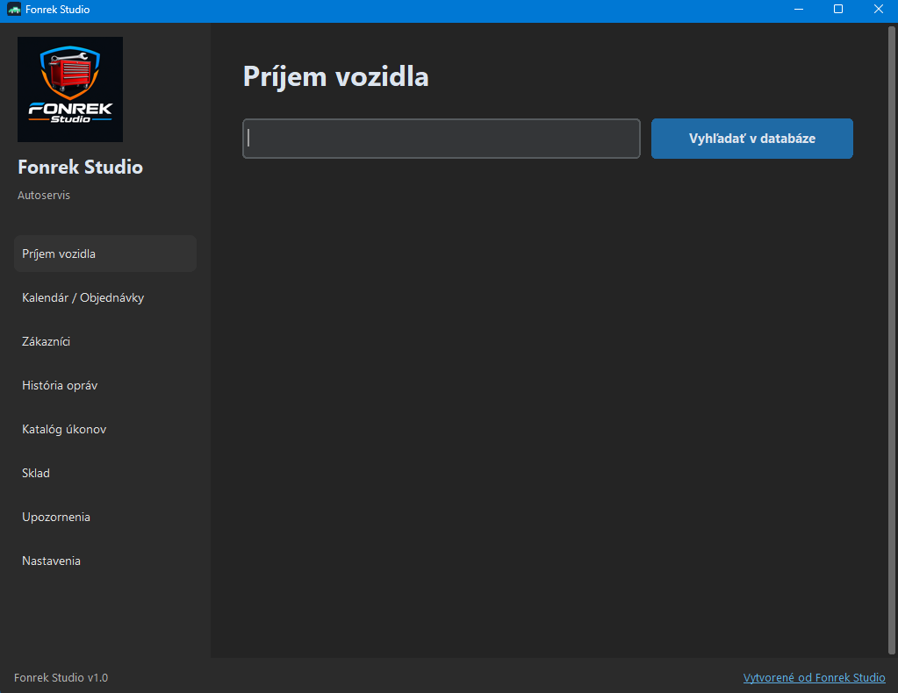
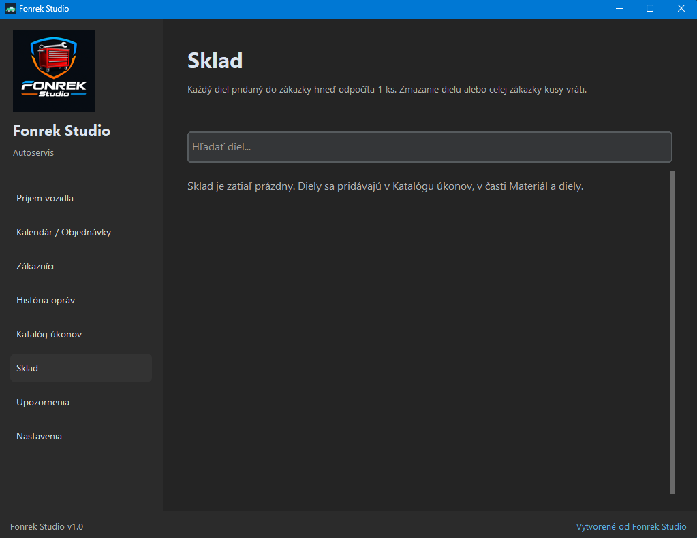
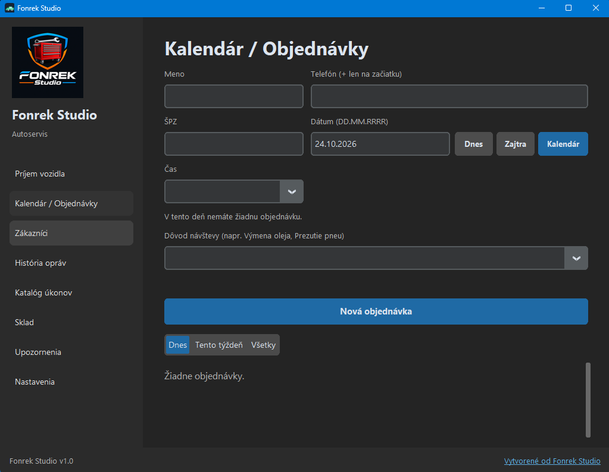
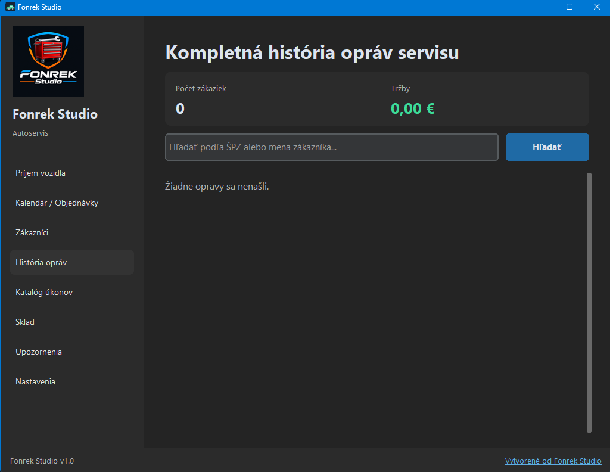
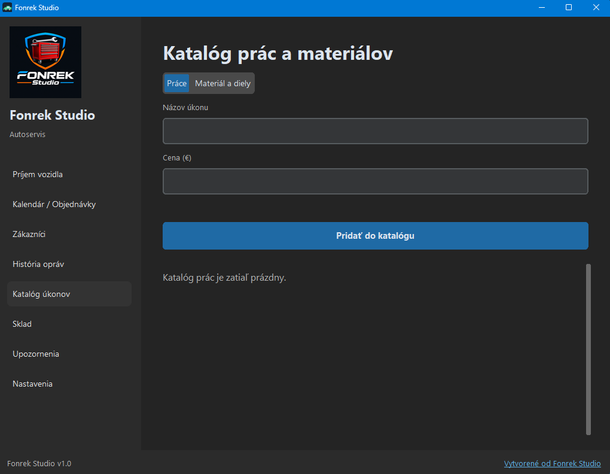
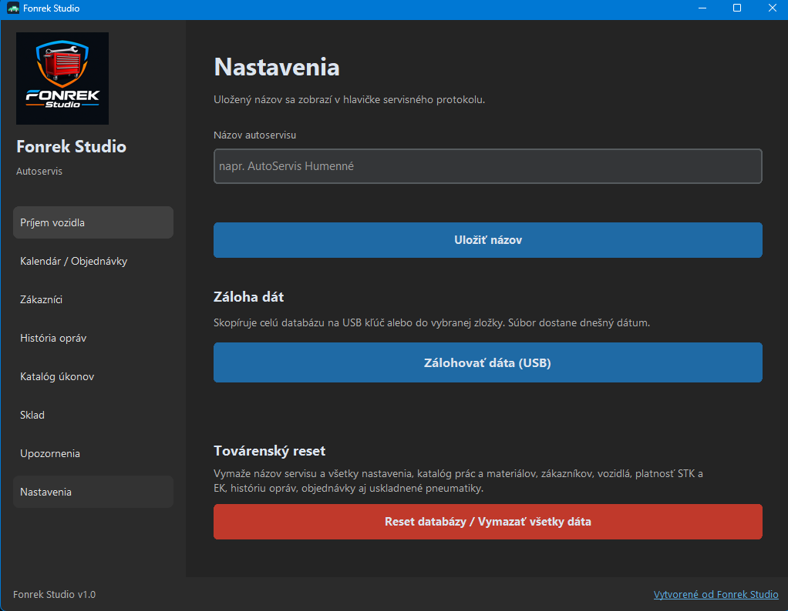

Prehľadný sklad materiálu
Diel pridaný do zákazky sa hneď odpočíta zo zásob. Zmazanie položky alebo celej zákazky kusy vráti, takže sklad sedí s tým, čo naozaj odišlo na autá.
Desktopová aj mobilná aplikácia
Zjednodušte si evidenciu zákazníkov, vozidiel, opravárenských zákaziek a servisných intervalov v prehľadnom a rýchlom softvéri.
Android Mobilná aplikácia je momentálne dostupná pre systém Android.

01 — Pre servis aj mechanika
Papier, zošit a rozhádzané tabuľky nahradí jedno okno. História auta, zákazka aj termín sú na dosah podľa evidenčného čísla.
Diel pridaný do zákazky sa hneď odpočíta zo zásob. Zmazanie položky alebo celej zákazky kusy vráti, takže sklad sedí s tým, čo naozaj odišlo na autá.
Meno, telefón, ŠPZ aj vozidlo máte spolu. Pri ďalšej návšteve otvoríte kartu podľa evidenčného čísla a hneď viete, komu auto patrí.
Objednávky plánujete po dňoch a hodinách. Aplikácia stráži STK, EK, olej, rozvody aj filtre a pripomenie termín skôr, ako ho zákazník prejde.
Protokol a zákazkový list vzniknú v PDF na jedno kliknutie. Každá oprava zostane v histórii, dohľadateľná podľa ŠPZ alebo mena.
02 — Prostredie aplikácie
Reálne obrazovky z Fonrek Studio. Príjem, sklad, kalendár, história, katalóg aj nastavenia sú v jednom okne na vašom počítači.
Príjem
ŠPZ zadáte do vyhľadávania a auto nájdete v databáze. Z príjmu hneď vznikne zákazka so stavom kilometrov a popisom závady.
Sklad
Každý diel pridaný do zákazky sa automaticky odpočíta o jeden kus. Keď položku alebo celú zákazku zmažete, zásoby sa vrátia. Sklad už nemusíte porovnávať s papierovým zoznamom.

Kalendár
Objednávku zapíšete na deň a hodinu a hneď vidíte, čo dielňu čaká. Aplikácia zároveň stráži STK, EK, výmenu oleja, rozvodov a filtrov, aby ste zákazníka oslovili včas.

História
Každú opravu nájdete podľa ŠPZ alebo mena zákazníka, aj s tržbou servisu. Z zákazky zároveň vznikne servisný protokol a zákazkový list v PDF na jedno kliknutie, bez prepisovania do tabuľky.

Cenník
Vlastné úkony aj diely máte v katalógu s cenou. Do zákazky ich pridáte na jedno kliknutie a diel sa zároveň odpočíta zo skladu.

Nastavenia
Do servisného protokolu vložíte názov vášho autoservisu. Celú databázu zákazníkov, vozidiel a opráv si zálohujete na USB. Dáta zostávajú vo vašom počítači.

Ukážka v praxi
Pozrite si ukážku kompletnej správy servisu: od príjmu vozidla podľa ŠPZ, cez plánovanie v kalendári až po históriu opráv a generovanie PDF protokolov.
03 — Čo je v balíku
Evidencia, ktorú autoservis naozaj používa. Od príjmu vozidla a skladu až po PDF protokol a kartu zákazníka.
Vozidlo zaevidujete rýchlo: ŠPZ, stav kilometrov aj popis závady. Z príjmu hneď vznikne servisný protokol, ktorý dopĺňate o prácu a materiál.
Diel pridaný do zákazky sa automaticky odpočíta zo zásob. Zmazanie dielu alebo celej zákazky kusy vráti, takže stav skladu drží krok s dielňou.
Meno, telefón, ŠPZ a vozidlo sú na jednej karte. Pri ďalšej návšteve otvoríte majiteľa aj auto podľa evidenčného čísla, bez hľadania v zošite.
Termíny plánujete v kalendári objednávok. Aplikácia pripomenie STK, EK, výmenu oleja, rozvodov a filtrov, aby zákazník neodišiel bez ďalšieho termínu.
Protokol pre zákazníka uložíte do PDF na jedno kliknutie. Každá oprava zostane v histórii servisu a nájdete ju podľa ŠPZ alebo mena.
Vlastný zoznam servisných prác a dielov s cenami. Úkon pridáte do zákazky z katalógu, bez opakovaného vypisovania položiek.
04 — Jedna voľba pre dielňu
Jednorazový nákup bez mesačných poplatkov. Dáta o zákazníkoch zostávajú vo vašom počítači.
Jedna platba
Softvér vám zostane. Žiadne odbery a žiadne opakované faktúry.
Vaše dáta
Program beží priamo na počítači v dielni. Údaje o zákazníkoch sa nikam neodosielajú a práca nečaká na server.
05 — Tri kroky
Žiadny server, žiadna registrácia účtu. Inštalácia na Windows a môžete evidovať.
Stiahnite si inštalačný balíček alebo .exe súbor aplikácie Fonrek Studio.
Spustite súbor na Vašom počítači (Windows) – inštalácia je rýchla a nevyžaduje žiadne zložité nastavovanie databáz.
Začnite okamžite evidovať prvých zákazníkov a zákazky!
06 — Jedna cena
Žiadne balíky a žiadne mesačné úrovne. Jednorazový nákup za 29,90 €.
Jednorazovo
29,90 € zaplatíte raz
Windows & Android · lokálna inštalácia · fakturácia na vyžiadanie